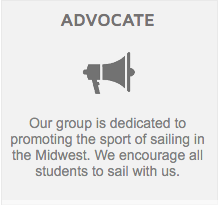
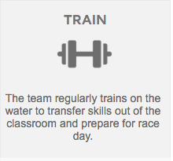
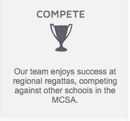
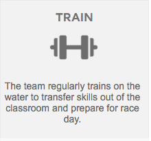
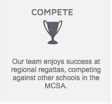

Note from the Captains
Welcome to the Washington University Sailing Team homepage! We have had a great start to our 2015 year. This spring, we've had a huge increase in team membership and we now host over 50 members. To keep up with demand, we’ve purchased three new boats and have been hosting multiple practices each week. On the racing end, our Vice Commodore, James Harvey, raced in Laser Singlehanded Nationals, marking Wash U’s first Nationals qualification in recent history. We’re also headed to three 420 regattas this spring with the goal of qualifying for 420 Fleet Racing Nationals in April. We are so thrilled by the team's growth so far and we welcome any support or interest from alumni, prospective students, and other friends of the team. Please feel free to check out our website or contact us at wu.sailing@gmail.com.
Happy sailing!
Nathan Ross and Theodore Cohen
Co-Commodores, Spring 2015
Pics
 


